国内の化学・石油化学・石油精製に限定した公開事例では、AIの主目的は単一の制御ループではなく異常予兆と運転最適化である。採算を停止回避日数や定修短縮で測れる公開事例は見つからず、投資の桁は1日停止損失との比で置く。
更新 2026-11-13｜Desk research｜出典は末尾
読者と判断：製造業向けにAIを提案する立場の人が、化学・石油化学プラントの担当者と初めて話す前に、どの工程のどの課題にAIを当てると停止損失の何日分で回収を測るかを判断できる。
分解：物理的制約は塔・槽・反応器・熱交換器・動機器とDCS/SISの階層である。お金の流れは製油所・エチレンの新設から定修、1日停止損失、AI実証費へと桁が下がる。利得の帰属は運転会社の固定費回避と制御・エンジニアリング会社のサービス売上に分かれる。法と強制力は高圧ガス保安法の認定高度保安実施者制度と消防法・労働安全衛生法の検査義務である。時間は定修周期と熟練運転員の退職である。
母集団は国内の化学・石油化学・石油精製に限定する。発電・物流・配船は除外する。FKDPPの35日実証と正式採用は同一案件として1件にまとめる。公開資料から16件を分類した。単一制御ループを主目的とする事例は0件である。内訳は多変数制御1件・運転最適化4件・異常予兆・保全10件・画像点検1件である。主張Aの反証条件（過半が単一制御ループ）は満たされない。
| 項目 | 内容 |
|---|---|
| 検索した語 | 日本語で「自律制御AI」「FKDPP」「異常予兆 製油所」「運転最適化 化学プラント」「産業保安高度化」「BiG EYES」「デジタルツイン 化学」「防爆ドローン プラント」。英語で autonomous control chemical plant Japan、predictive maintenance petrochemical Japan を併用した。 |
| 期間 | 公開年がおおむね2017年から2025年の案件を対象とした。年が非開示の事例は、ベンダー事例ページの記述時点で含めた。 |
| 情報源 | 各社のプレスリリースと制御ベンダーの事例ページである。SIIの産業保安高度化推進事業の交付決定一覧と業界報道も含めた。 |
| 除外基準 | 発電・物流・配船、海外プラント単体、化学・石油化学・石油精製以外の業種。製品紹介だけで導入拠点が特定できない資料は件数に入れない。 |
| 重複の扱い | 同一技術・同一拠点の実証と正式採用は1件にまとめる。FKDPPの35日連続制御と正式採用が該当する。 |
| 分類 | 件数 | 主に測る効果（公開値） |
|---|---|---|
| 異常予兆・保全 | 10 | 検知の時間前倒し、故障停止の回避試算、トラブル未然防止 |
| 運転最適化 | 4 | 手動比の工数、サンプリング低減、フォーミング予測 |
| 多変数制御 | 1 | 液面安定、蒸気約40%削減（FKDPP） |
| 画像点検 | 1 | 防爆ドローン等による点検の自動化 |
| 単一制御ループ | 0 | — |
| # | 年 | 主体 | 拠点・対象 | 分類 | 効果（公開値） |
|---|---|---|---|---|---|
| 1 | 2022–23 | 横河電機×JSR／ENEOSマテリアル | 四日市・ブタジエン蒸留塔・FKDPP | 多変数制御 | 35日連続制御の後、約1年稼働で正式採用。蒸気使用量約40%削減34 |
| 2 | 2020 | 三井化学×NEC×産総研 | 論理思考AI＋ミラープラント | 運転最適化 | 手動比40%効率化5 |
| 3 | 2019 | JXTG（ENEOS）水島×NEC | 製油所・インバリアント分析 | 異常予兆 | センサ相関の変調検知6 |
| 4 | 2025 | ENEOS | 製油所・Aspen Mtell | 異常予兆 | 2019仙台実証後に展開7 |
| 5 | — | 三菱ガス化学×アズビル | 新潟・BiG EYES | 異常予兆 | 数時間〜数日前に検知8 |
| 6 | 2017頃 | 東ソー×アズビル | 南陽・BiG EYES | 異常予兆 | 安全・安定操業9 |
| 7 | 2022 | 花王×アズビル | 和歌山・バッチ異常予兆 | 異常予兆 | 運転負荷・品質10 |
| 8 | 2020 | ENEOS | 製油所・AI自動運転実証 | 運転最適化 | 産業保安高度化採択11 |
| 9 | 2018 | 日立×昭和電工 | 大分・エチレン・ARTiMo | 異常予兆 | コーキング条件の解析と実運用12 |
| 10 | — | 千代田化工 | FPAS（フォーミング予測） | 運転最適化 | 稼働率向上を掲げる13 |
| 11 | 2020 | 日揮×インフォキューブ | 配管内面腐食AI | 異常予兆 | 産業保安高度化採択11 |
| 12 | 2020 | 千代田化工×西部石油 | 製油所・運転データ融合AI | 異常予兆 | 産業保安高度化採択11 |
| 13 | 2022 | 三菱ケミカル×ブレインズテクノロジー | 東海・Impulse | 異常予兆 | 調節弁の固着・空気圧低下の予兆分析14 |
| 14 | — | 旭化成 | 化学品・撹拌機の故障予測 | 異常予兆 | 予測スパンを20日から5カ月へ延長。停止1回で数億円のロスと記載15 |
| 15 | 2024 | DIC×日立 | 国内合成樹脂・デジタルツイン | 運転最適化 | サンプリング低減、品質安定、立ち上げ短縮16 |
| 16 | 2020 | A.L.I. Technologies等 | プラント・防爆ドローン＋AI点検 | 画像点検 | 産業保安高度化採択11 |
FKDPPは液面を含むが、PIDとAPCでは自動化できず運転員がバルブ操作量を自ら入力していた多変数箇所である。単一ループのチューニング事例と同列には扱わない。分類は多変数制御とし、主張Aの「単一制御ループ」の件数には入れない。
横河電機は自社資料で、60以上の工場・プラントでAIを用いた課題解決の実績があると述べている。17 公開された個別案件の内訳は、上記の分類と同じく異常予兆と運転支援が多い。
第1章の16件が当たる機器と工程を、業種×機器と工程図で示す。工程はナフサ分解と常圧蒸留を起点に分岐する。国内の拠点位置と能力は既存地図に委ね、ここでは流れと規模だけを示す。
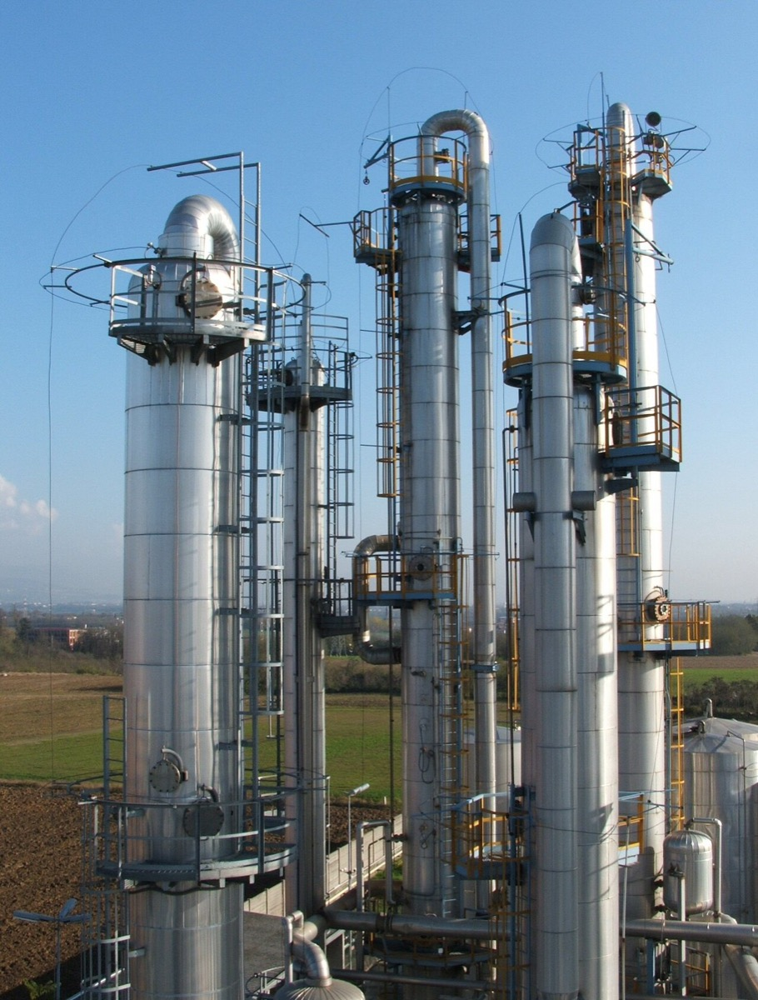
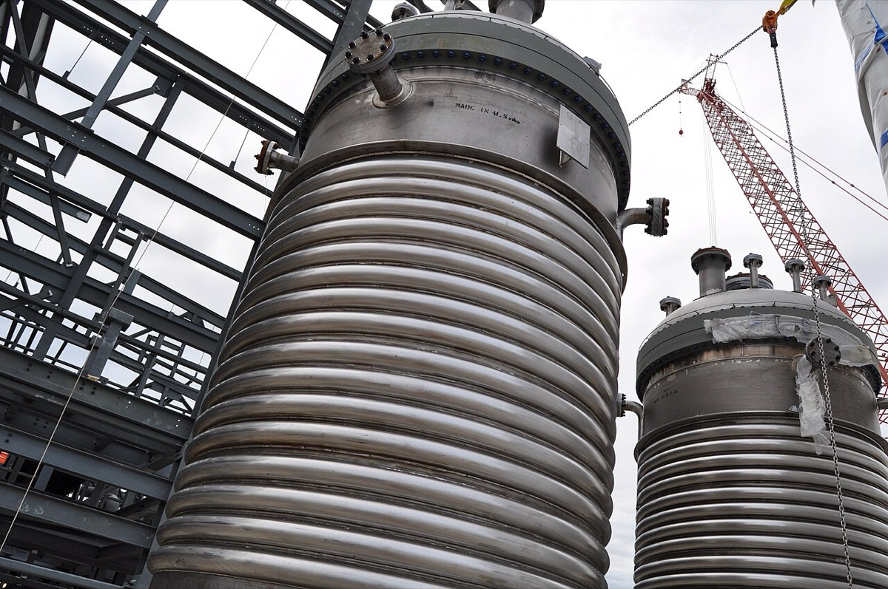
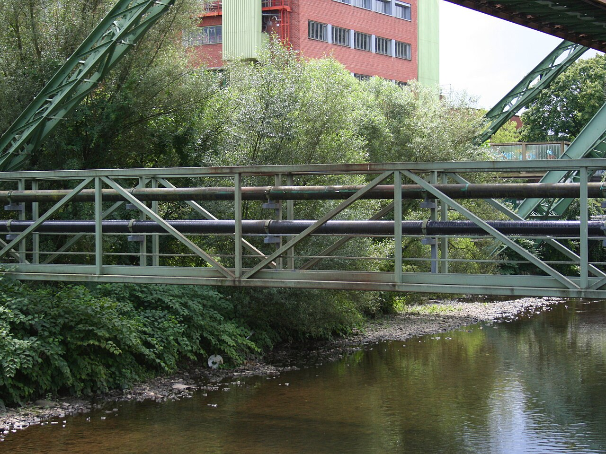
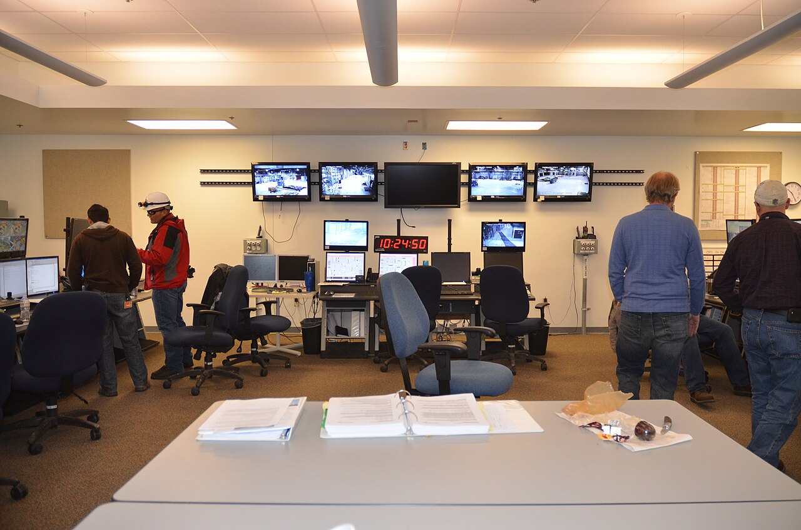
拠点の位置と能力は、日本の石油化学・製油所地図と産業アトラスに既にある。国内エチレンの生産能力は2024年末で616.2万トン/年である（定修実施年ベース）。メーカー別の上位は出光興産99.7万トンとENEOS 89.5万トンである。京葉エチレンは69.0万トン、クラサスケミカルは61.8万トンである。1 稼働率は2024年時点で70%台まで低下したとの二次集計があり、各社は設備の統合・停止を公表している。2
万トンの数字は、他国・単一設備・国内の他の生産量と並べると規模を把握しやすい。国内統計の616.2万トンは定修実施年ベースであり、国際比較の集計とは基準が異なる。下表の国別能力は、韓国化学産業協会の集計値である。日本は同じ表に含まれないため、国内統計の値と並べる。
| 比較の軸 | 数値 | 日本との関係 |
|---|---|---|
| 国別のエチレン生産能力（2024年） | 世界2億2,766万t。中国5,175万t／米国4,553万t／サウジアラビア1,797万t／韓国1,295万t43 | 中国は日本の616.2万トンの約8.4倍、韓国は約2.1倍である。日本は世界の約3%である。日本の値は国内統計で、定修実施年の能力を示す |
| 単一プラントの規模 | 米国テキサス州のGCGVは1基で180万t/年である（2021年完成時に世界最大）44 | 国内首位の出光興産の全拠点合計99.7万トンの約1.8倍を、1基で生産する |
| 国内生産量の推移 | 2000年761.4万t、2024年498.9万t45 | 24年間で約34%減少した。能力616.2万トンに対する2024年の生産量は約81%である |
| 国内の他の生産量（2024年） | 主食用米734.5万t、セメント4,638万t、粗鋼8,400.8万t46 | エチレン生産量は主食用米の約7割、粗鋼の約6%である。国民1人あたりでは年約40kgである |
| エチレンから生産される製品 | 世界のエチレン需要の61%がポリエチレン向けである。エチレン1tから理論上約1tのポリエチレンが得られる47 | ポリエチレンはレジ袋・食品包装フィルム・灯油缶の原料である。日本の樹脂消費量は2024年に856万tで、1人あたり年約69kgである48 |
エチレンは植物ホルモンでもある。バナナは収穫後にエチレンを与えて追熟させる。リンゴはエチレンを多く放出するため、近くに置いた果物や野菜の成熟と軟化を早める。49 プラントで年数百万トン生産する物質と、果物の熟成を進める物質は同一の分子である。
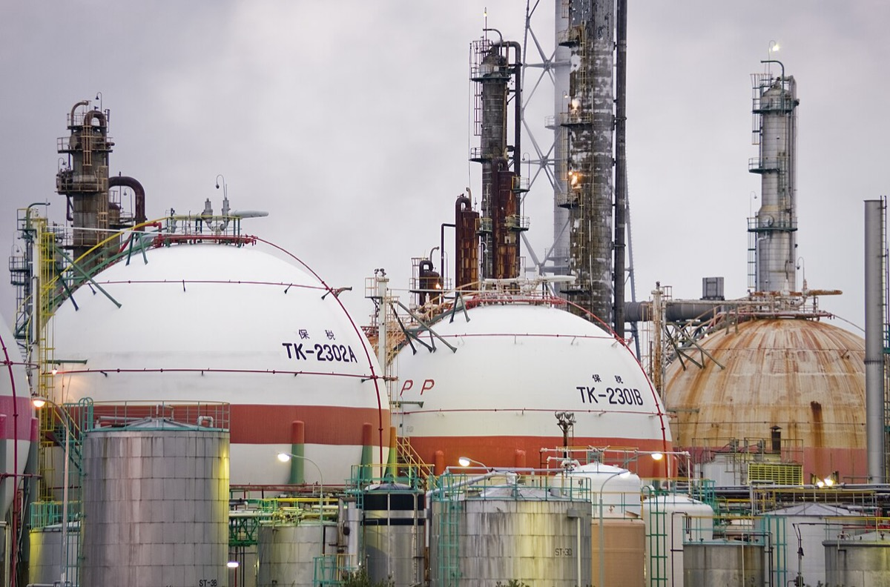
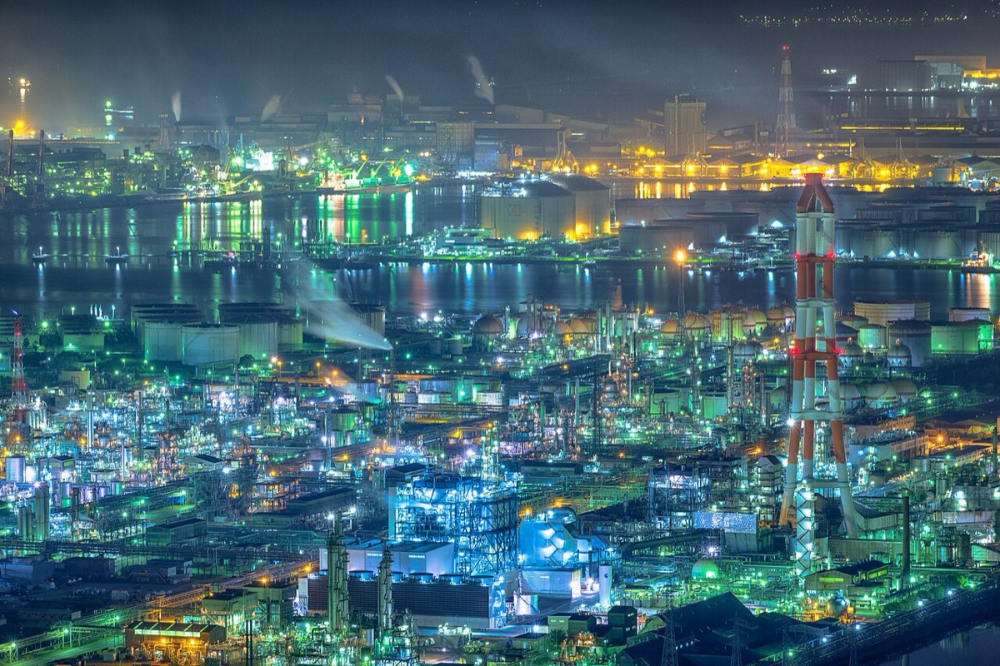
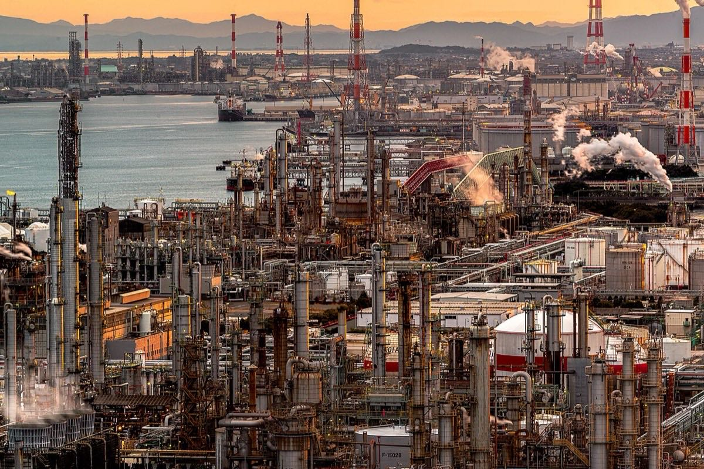
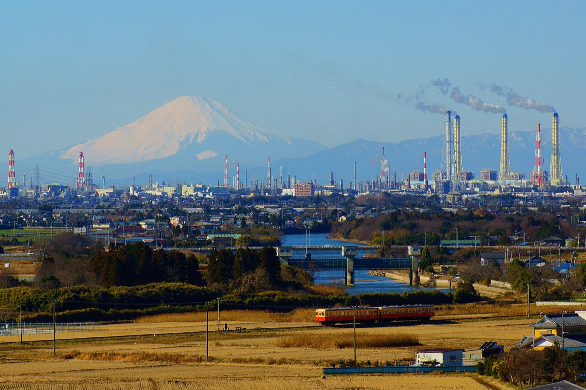
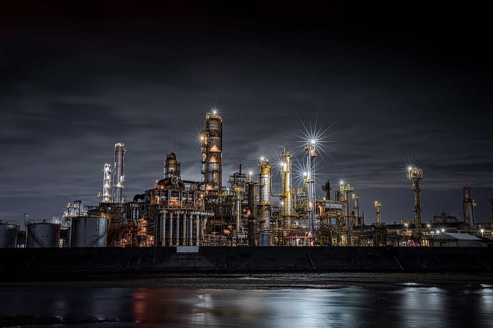
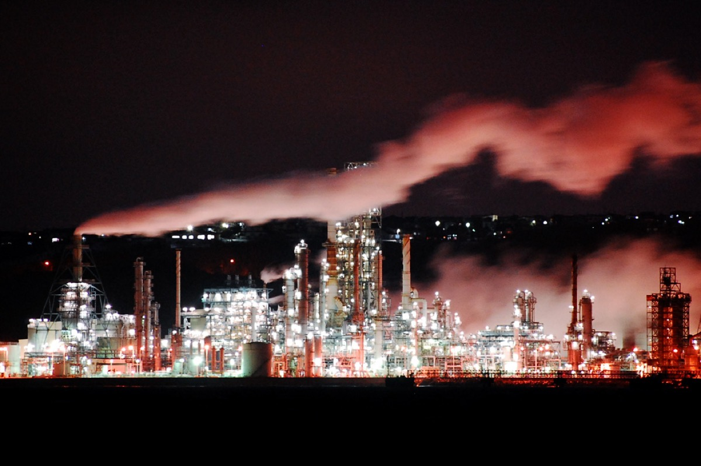
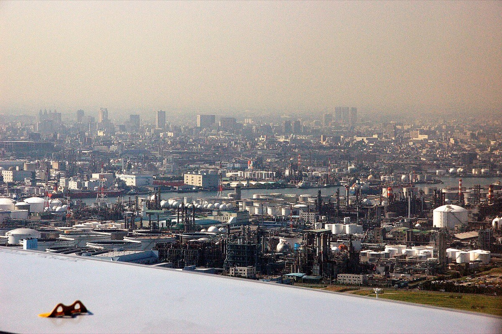
主張Bは、停止回避日数または定修短縮で効果を示した国内公開事例で検証する。検索した結果、導入費と回避日数を同一案件で示した化学・石油化学・石油精製の事例は見つからない。富士電機の化学系メーカー事例は故障停止回避の損失対策を年間3,000万〜7,000万円と試算するが、日数と導入費は非開示である。18 旭化成は撹拌機停止1回で数億円のロスと予測スパンの延長を述べるが、回避した停止日数は示さない。15 したがって主張Bは判定不能とする。以下は、採算を測るときの桁だけを一次資料から積み上げる。
| 項目 | 数値 | 式・前提 | 出典 |
|---|---|---|---|
| 製油所・石化新設 | 約90億米ドル（約8,800億円） | ベトナム・ニソン製油所・石油化学コンプレックス。日量20万バレル＋アロマ等。2013年最終投資決定。90億ドル×2013年年平均97.6円/ドル | 三井化学発表19／円換算は共通表20 |
| 製油所新設（海外比較） | 約190億米ドル | ナイジェリア・Dangote製油所（日量65万バレル）。建設費として報道 | Reuters等21（single-source） |
| エチレン新設（EPC） | 約479億円（2012年） | 東洋エンジニアリングが受注したエジプトETHYDCO案件。エチレン46万t/年＋ブタジエン等。約6億ドル×2012年年平均79.8円/ドル | 東洋エンジニアリング発表22／円換算は共通表20 |
| 分解炉更新（国内） | 数十億〜100億円 | 丸善石油化学千葉・分解炉2炉（計15万t能力）の更新。能力は不変 | 報道（東洋エンジニアリング受注）23 |
| 定修費 | 80〜100億円 | 年産60万t級エチレンの大規模定修（2017年例）。期間約2カ月。外部作業員ピーク3,000人/日 | 石油化学工業協会24 |
| 停止損失（総額） | 約30億円 | 三井化学市原エチレン（能力55.3万t/年）。2010年2月28日停止、3月26日再開。熱交換器補修に伴う損失 | 三井化学適時開示2526 |
| 1日停止損失 | 約1.2億円/日（推定） | 30億円÷26日（2/28〜3/26）。停止期間は再開発表で確定 | 上と同じ（日割りは推定） |
| AI実証の補助 | 上限4億円／事業者。大型法人の補助率1/2、中小・スタートアップは2/3 | 令和2年度補正・産業保安高度化推進事業（産業保安AI実証）。個別の交付額は非開示 | JEMIMA案内27／SII交付決定一覧11 |
| AI実証の総事業費上限 | 最大約8億円（推定） | 補助上限4億円÷補助率1/2。大型法人が上限まで使う場合の逆算。実額の開示はない | JEMIMA27（推定） |
| 回収の置き方 | 上限で約7日分 | 8億円÷1.2億円/日。実導入額と実回避日数が揃えば、この式を案件ごとに置き換えられる | 本表の積み上げ |
FKDPP案件の個別の補助額と自己負担額は公開されていない。効果側では、手動制御比で蒸気使用量とCO2排出量を約40%削減したと発表されている。4 増産を主指標とする開示ではない。
金額が5件以上あるため、日本円での読み方を添える。ニソン案件の約90億ドルは2013年年平均97.6円で約8,800億円である。ETHYDCOの約6億ドルは2012年年平均79.8円で約479億円である。2025年の物価への換算は行わない。比較対象は同時代の国内定修費と停止損失である。
| 手段 | 案件・受け手・出し手 | 金額・年 | 出典 |
|---|---|---|---|
| 銀行・DBJ融資 | プライムポリマー PP製造設備のビルド&スクラップ向け対話型SLL。受け手:プライムポリマー。出し手:DBJ。60万t級定修80〜100億円の個別借入先と融資額は未確認（各社の借入開示で埋まる） | 100億円（2022年10月） | 40 |
| 協調融資（プロジェクトファイナンス） | ニソン製油所・石油化学コンプレックス。受け手:NSRP（出光35.1%・クウェート国際石油35.1%・ペトロベトナム25.1%・三井化学4.7%）。出し手:JBIC、韓国輸出入銀行、国内外民間銀行等。民間の行別融資額は未確認（融資契約の行別開示で埋まる） | 2013年。融資総額50億米ドル（JBIC直接融資16.5億米ドル、韓国輸出入銀行は直接融資計約23億米ドルのうち約6.5億米ドル、民間銀行等計約27億米ドル）。NEXI海外事業資金貸付保険13億米ドル。総投資約90億米ドルのうち出資者負担約40億米ドル | 19 |
| 補助金 | 産業保安高度化推進事業（R2補正）のAI実証。受け手:交付決定事業者（ENEOS・横河×JSR等）。出し手:国（SII経由） | 事業全体20億円。AI実証は約1/3強。補助上限4億円／事業者。補助率は大型1/2・中小等2/3。個別交付額は非開示 | 27 |
| トランジション・リンク・ボンド | ENEOSホールディングス第4回・第5回無担保社債（国内初のTLB）。受け手:ENEOS HD。出し手:資本市場（投資家）。主幹事に三菱UFJモルガン・スタンレー証券等 | 合計1,000億円（10年債850億円＋20年債150億円）。2022年6月15日発行 | 28 |
| トランジション・リンク・ローン | 利子補給型TLL。受け手:ENEOS。出し手:三菱UFJ銀行・みずほ銀行 | ENEOS分500億円（2024年3月、期間10年）。行別の内訳は未確認（両行またはENEOSの行別開示で埋まる） | 29 |
| トランジションボンド | 出光興産第15回・第16回無担保社債。受け手:出光興産。出し手:資本市場（投資家）。主幹事に三菱UFJモルガン・スタンレー証券・大和証券・みずほ証券 | 合計200億円（5年債100億円＋10年債100億円）。2022年7月14日発行 | 41 |
| DBJサステナビリティ・リンク・ローン | 対話型SLL（第一号）。受け手:三菱ケミカルホールディングス（当時）。出し手:DBJ。SPTはケミカルリサイクル関連 | 300億円（2020年、期間10年） | 30 |
| グリーンイノベーション基金 | 混合プラスチックから基礎化学品を製造するケミカルリサイクル技術の開発。受け手:レゾナック。出し手:NEDO（GI基金）。同基金の「CO2等を用いたプラスチック原料製造」全体の予算上限は1,540.3億円 | 支援規模約80億円（事業規模約118億円）。2025年1月採択（実施期間は2024〜2032年度） | 31 |
| GX経済移行債（補助金） | 排出削減が困難な産業におけるエネルギー・製造プロセス転換支援事業（事業II）「川崎事業所での水素発電ガスタービン導入事業」。受け手:レゾナック。出し手:国（GX経済移行債を財源とする補助） | 投資規模217.24億円、交付申請上限70.83億円。2025年10月採択。実際の交付額は未確認（交付決定額の公表で埋まる） | 32 |
| トランジションローン（GX推進機構債務保証） | 川崎事業所KPR（プラスチックケミカルリサイクル設備）向け。受け手:レゾナック。出し手:みずほ銀行（GX推進機構が債務保証） | 契約2026年3月。借入額は未確認（レゾナックまたはみずほ銀行の借入額開示で埋まる） | 42 |
AI単体のプロジェクトファイナンスは公開例が少ない。保安高度化の補助金と、脱炭素のトランジション資金が、プラント投資の主な外部資金である。
2023年経済構造実態調査（製造業事業所調査）によると、化学工業の製造品出荷額等は34兆2,810億円で、製造業計361兆8,774億円の9.5%である。従業者数は39万5,304人で、製造業計775万1,935人の5.1%である（従業者は2023年6月1日、出荷額は2022年1年間）。33
プラスチック製品とゴム製品を含めた広義の化学工業では、出荷額約51兆円、従業者約96万人である。34 財務省貿易統計では、2024年の「化学製品」輸出額は11兆9,976億円で、輸出総額に占める構成比は11.0%である。35
経済安全保障推進法の特定重要物資には肥料とりん酸アンモニウムと塩化カリウム等が含まれる。半導体の部素材では珪素とヘリウムと希ガスと蛍石等が対象である。化学産業は原料と部素材の供給側に位置する。36
高圧ガス保安法は2022年改正で認定高度保安実施者制度を創設し、2023年12月21日に施行された。IoT・AI・ドローン等を用いる高度な保安を実施する事業者は、一定の要件のもと検査・届出が簡略化される。37 消防法と労働安全衛生法にも検査・届出の義務がある。スマート保安は、これらの規制コストと熟練人材の不足を同時に扱う制度変更である。
コンビナートは京葉・川崎・鹿島・四日市・水島・周南・大分などに集中し、地域の雇用と固定資産税の基盤になっている。拠点の地理は既存地図を参照する。
| 人物 | 当時の立場 | 意思決定・行動 | 結果 |
|---|---|---|---|
| 小渕恵一郎 | 横河電機（のち横河デジタル） | 2020年、産業保安高度化推進事業の枠でAIによるプラント直接制御の実証を行うと決め、JSR（のちENEOSマテリアル）に声をかけた。ガイドライン委員として桝谷氏と接点があった。38 | 四日市のブタジエン蒸留塔でFKDPP実証が開始された。2022年に35日連続制御、2023年に正式採用へ進んだ。34 |
| 桝谷昌隆 | ENEOSマテリアル（当時JSR）生産技術部長／のち生産技術本部長 | 自律制御AIの実証提案を受け、適用先として四日市のブタジエン生産プラントを特定した。現場の製造第三課と共同実証を進めた。38 | 約1年の安定稼働と蒸気約40%削減を確認し、正式採用を表明した。コメントで省エネ・GHG削減と運転員負荷低減を成果とした。4 |
| 松原崇充 | 奈良先端科学技術大学院大学教授 | 横河電機と共同で強化学習アルゴリズムFKDPPを開発した。3 | 実プラントへの適用と日本産業技術大賞の対象技術となった。38 |
| 奈良寿 | 横河電機 代表取締役社長（当時） | FKDPP正式採用のプレスに名を連ね、自律制御AIの製品化（エッジコントローラ上のサービス開始）とコンサルティング展開を示した。4 | 個別プラント実証から製品・サービスラインへの移行が公表された。 |
| 工藤幸四郎 | 旭化成社長・石油化学工業協会長（2024年〜） | 協会長としてエチレン設備の統合・再編を含む業界課題への対応を公の場で述べた。39 | 協会の方針表明。個別設備の停止判断は各社の投資決定である。 |
現場の役職はボードマン・運転員・保全・計装エンジニア・生産技術である。エンジニアリング会社は千代田化工建設・日揮・東洋エンジニアリングである。制御ベンダーは横河電機とアズビルである。行政は経済産業省産業保安グループとスマート保安官民協議会である。


.jpg){kind=link}